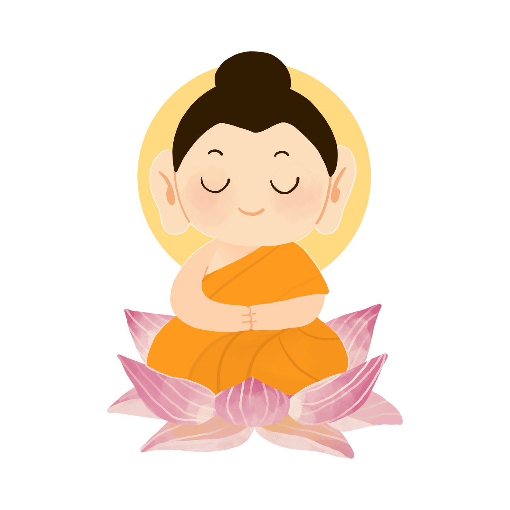
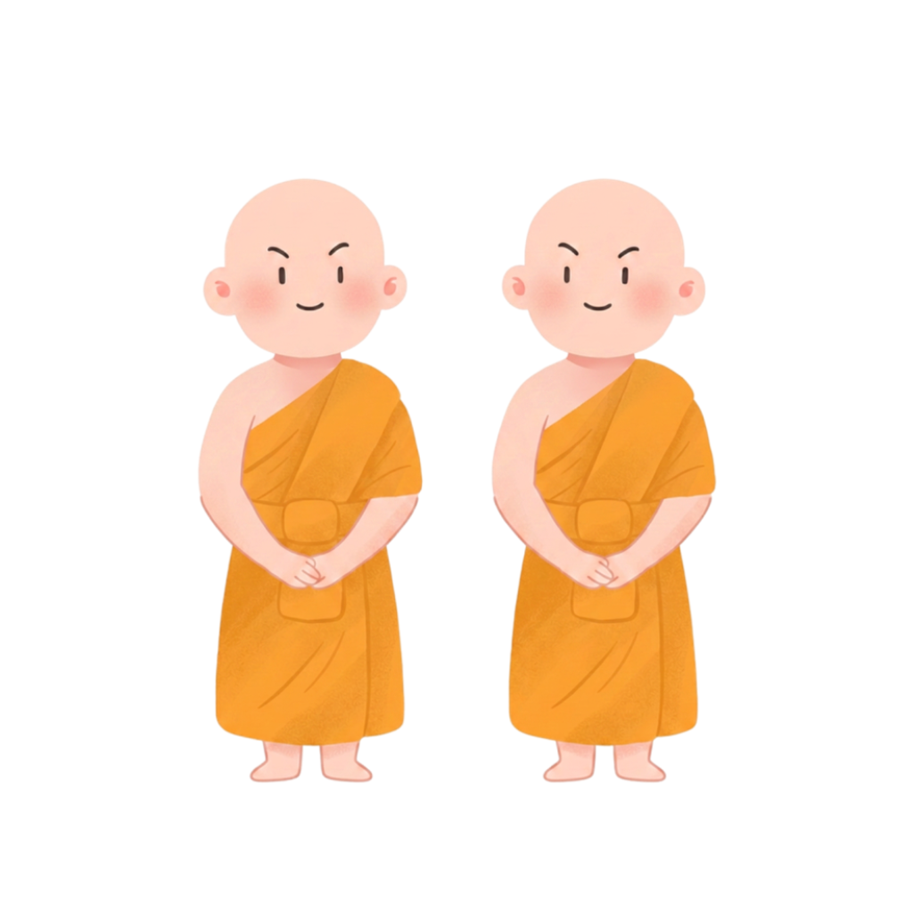
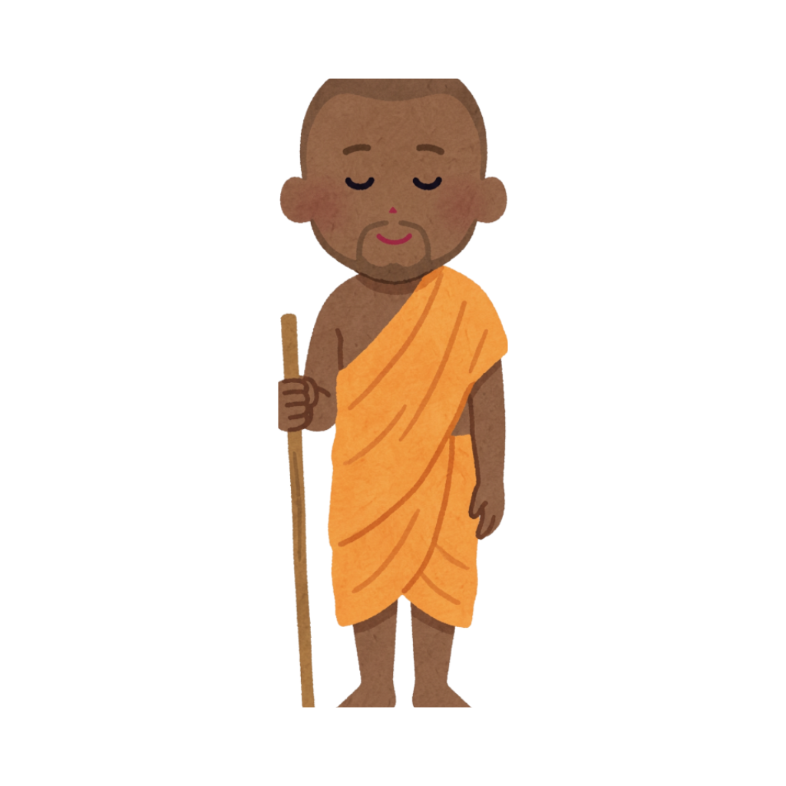
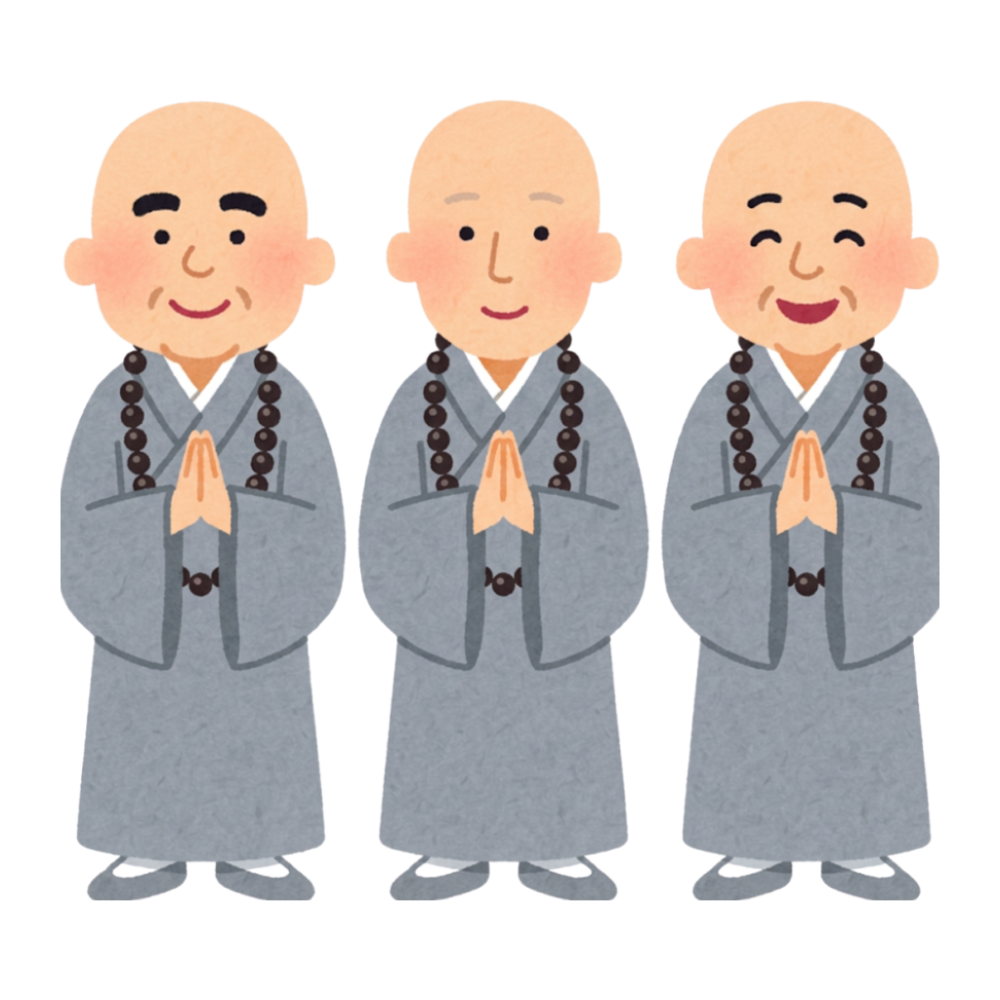
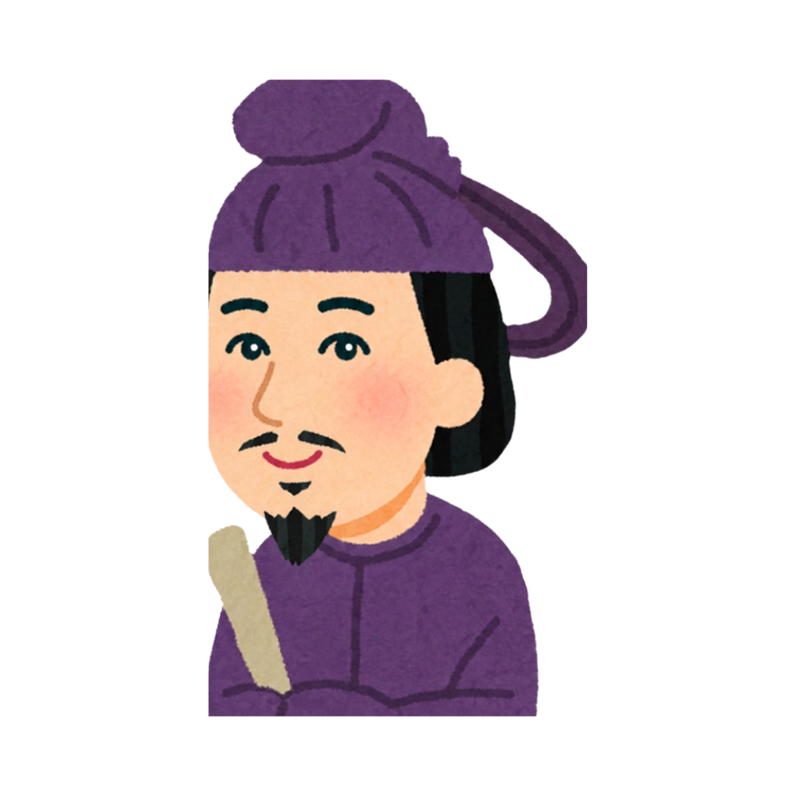
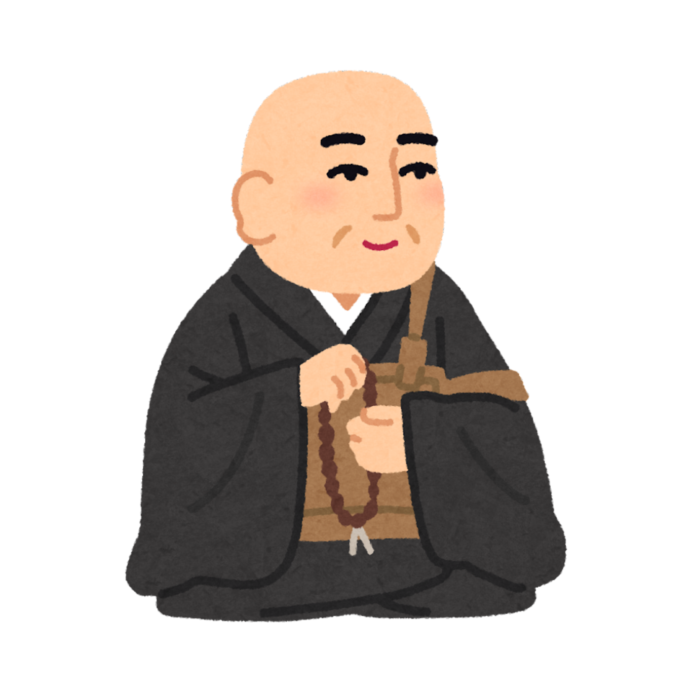
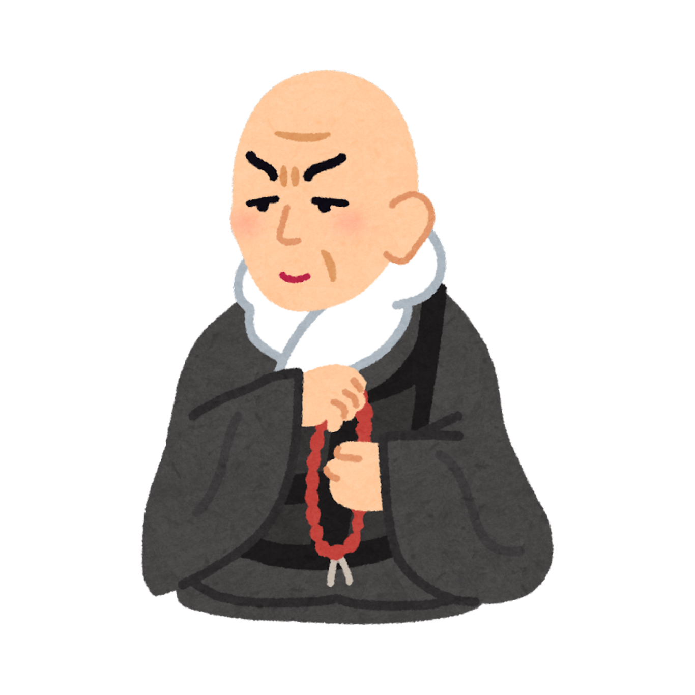
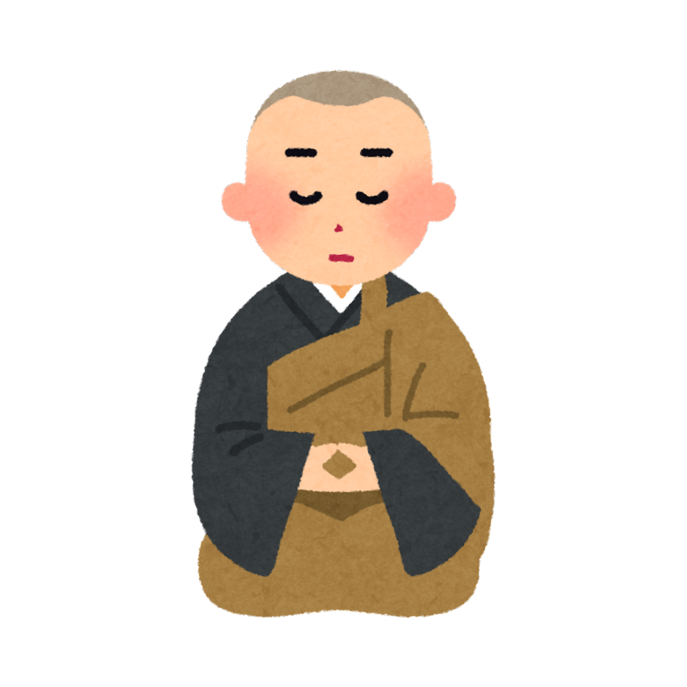
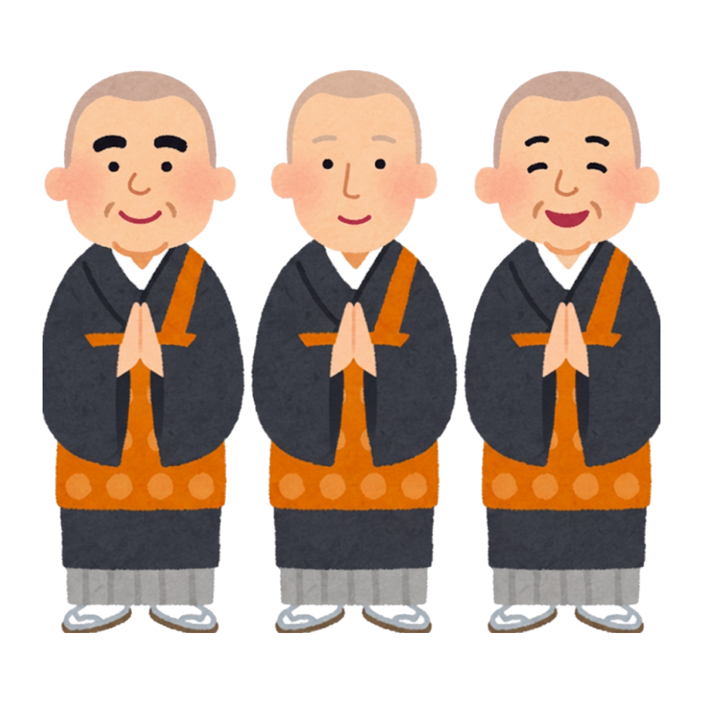

🔍 独自の視点
お釈迦様は「神」ではなく「人間」だった。これが最大のポイント。神の啓示ではなく、自ら考え・実験し・検証したことで悟りに至った。その意味で、仏教は世界最古の「実証的な心理学」といえる。現代の認知行動療法やマインドフルネスは、2500年前の釈迦の思想が源流にある。
🌏 現代への意味
Googleやアップルがマインドフルネスを社員研修に導入し、世界中のビジネスリーダーが瞑想する——この現象の大元はお釈迦様の瞑想実践にある。「今ここに意識を向ける」という至極シンプルな処方が、スマホ過多の現代人の処方箋として再発見されている。
📜 何を残したか
- 四諦（苦・集・滅・道）——苦しみの構造を論理的に解明
- 八正道——具体的な実践の道筋
- 縁起の法——すべては繋がり、固定した「自己」はないという革命的な思想
- サンガ（僧伽）——世界最初の非営利コミュニティ組織
🌱 影響を受けた人たち
さらにガンジー、マルティン・ルーサー・キング、スティーブ・ジョブズも影響を公言している。
怒りを持って怒りに勝ち、善によって悪に勝ち、布施によってけちに勝ち、真実によって嘘つきに勝て。— ダンマパダ（法句経）より

🔍 独自の視点
龍樹の「空（śūnyatā）」とは「何もない」ではなく「固定した本質を持たない」という意味。これは現代物理学の「素粒子には固有の実体がなく、観測によって決まる」という量子論と不思議なほど響き合う。龍樹は論理だけで、科学機器なしに同じ結論に至った。
🌏 現代への意味
「空」の思想は「固執しない」ことの哲学的根拠。SNS時代の「炎上」も、承認欲求も、すべては「固定した自己」への執着から生まれる。龍樹の思想は2000年前に、その処方箋を書いていた。
📜 何を残したか
- 中論——「あらゆるものは縁起によって成り立ち、自性（固有の本質）はない」という完璧な論証
- 大智度論——膨大な仏教百科全書（10万頌以上）
- 大乗仏教に哲学的基盤を与えた「第二のブッダ」と称される
🌱 後世への影響
縁起するものを、われわれは空性と説く。— 中論 第24章18偈
それは仮設に依存したものであり、それこそが中道である。

🔍 独自の視点：人類初の認知科学
「唯識」とは「識のみがある」——外部世界そのものではなく、私たちが知覚している表象だけが確かな現実だという思想。これは17世紀デカルトの「コギト」より1200年早い。そして現代の認知科学・VR論とも驚くほど重なる。「現実とは脳が作り出すシミュレーションだ」という現代の議論を先取りしていた。
🌏 現代への意味
世親の「アーラヤ識（阿頼耶識）」は、意識の深層に蓄積される種子（業の記録）を指す。現代でいえば「無意識」に当たる。フロイトより1500年早く無意識の構造を論じていた。「なぜ同じパターンの失敗を繰り返すのか」——その答えが阿頼耶識にある。
📜 何を残したか
- 倶舎論——仏教哲学の百科全書。「仏教のアリストテレス」と呼ばれる所以
- 唯識三十頌——たった30の詩節で意識の全構造を論じた奇跡的な短さの傑作
- 法相宗（日本では玄奘・道昭を経て）の根拠となる思想体系
🌱 後世への影響

驚異の翻訳
鳩摩羅什が漢訳した経典は、それ以前の翻訳と別物とも言える完成度だった。単なる逐語訳ではなく、漢語として自然に読める「意訳」を重視。「法華経」「阿弥陀経」「金剛般若経」「維摩経」——これらすべての日本語読みの原典は彼の手から生まれた。
波乱の生涯
7歳で出家し、カシミールやインドで修行。帰国後、亀茲国で高名な僧として名声を得たが、後秦の将軍・呂光に捕らえられ17年間抑留。後秦の姚興皇帝に迎えられ長安に入り、国家プロジェクトとして翻訳事業に従事。悲劇的な境遇の中で生涯最大の仕事を成し遂げた。
浄土真宗との縁
鳩摩羅什訳の「阿弥陀経」は、今日も浄土真宗の勤行で読まれる。「南無阿弥陀仏」を称えることで極楽浄土に往生できると説くこの経典が、法然・親鸞の念仏革命の礎となった。1600年を超えて、彼の言葉は今なお生きている。
🌏 現代への意味
鳩摩羅什の仕事は、単なる「翻訳」を超えた「文化の移植」だった。言語が違えば概念も変わる——それを承知で、彼はサンスクリット語の哲学をできる限り美しい漢語に置き換えた。「翻訳は裏切りである」という言葉があるが、鳩摩羅什は裏切りを芸術に変えた。異文化を繋ぐすべての人への勇気の源泉だ。
🌱 後世への影響
彼の訳した阿弥陀経なくして、浄土思想の中国・日本への伝播はなかった。
月を指す指を見て、月だと思ってはならない。— 鳩摩羅什の教えより
経典は月を指す指に過ぎない。

曇鸞の革新
もとは道教を学んでいたが、菩提流支から浄土経典を受けて一転。「自力」の限界を認め、阿弥陀仏の「他力」に依ることを論証した。病弱だったからこそ「弱い者の救済」の論理を徹底した。
道綽の貢献
「聖道門」（悟りを自力で目指す道）と「浄土門」（阿弥陀仏に依る道）を明確に二分し、末法の世には浄土門だけが現実的だと断言。この「時代診断」が浄土思想の普及を加速させた。
善導の完成
念仏の実践を「観想念仏」から「称名念仏（声に出して唱える）」へと大衆化。「南無阿弥陀仏」と唱えることを正定業とした。この確信が法然に直接継承された。「称名念仏」の発明者。
🌏 現代への意味
「努力すれば報われる」という自力主義が崩れた時代——善導の「弱い者のための念仏」は、現代の燃え尽き症候群や自己肯定感の低い人々へのメッセージとして新鮮に響く。「あなたのままで救われる」という宣言は、最も過激な形の「ありのまま肯定」だ。
🌱 後世への影響
法然は「善導一人に従う」と言い切った。善導なくして浄土真宗は存在しない。

🔍 独自の視点
聖徳太子は「仏教の受容」だけでなく、仏教を政治思想に変換した最初の人物。「三宝（仏・法・僧）を敬え」と憲法に書いたことで、仏教は貴族の趣味から国家の倫理基盤へと昇格した。また「実は聖徳太子は複数人物の合成像では？」という学説も存在し、歴史の謎も深い。
🌏 現代への意味
十七条憲法の「和をもって貴しとなす」は今も日本の会議文化・根回し文化・横並び意識の源流。良い面では協調性、問題面では「空気を読む」同調圧力にもなる。聖徳太子の遺産は、現代日本の光と影の両方に生きている。
📜 何を残したか
- 十七条憲法——日本最初の成文憲法。仏教倫理を政治に組み込んだ
- 三経義疏——法華経・維摩経・勝鬘経の注釈書（現存最古の日本人の著作）
- 冠位十二階——能力主義人事の先駆け（家柄ではなく徳と才で位を与える）
- 遣隋使——大陸文明の積極的な輸入政策
🌱 後世への影響
聖徳太子への信仰は鎌倉時代の親鸞にも深く、親鸞は夢に太子が現れた体験を持ち、「和国の教主」と尊称して讃えた。法隆寺は現存最古の木造建築として世界遺産に。太子信仰は今も各地に残る。
🔍 独自の視点：1000年前のコンテンツ戦略家
源信は「念仏の大切さ」を伝えるために、まず地獄の恐怖を徹底的にリアルに描写した。八大地獄それぞれの苦しみをまるで目撃者のように記述——これは完全に「恐怖訴求」のマーケティングだ。そして地獄の後に極楽の美しさを説く「コントラスト効果」。源信は心理学を使っていた。
🌏 現代への意味
往生要集の地獄描写はその後の日本美術（地獄絵）・文学・映像表現のルーツになった。現代のホラー映画や地獄の概念も源信の影響下にある。また「念仏を称えれば誰でも往生できる」という民主化の思想が、後の法然・親鸞の改革を準備した点で、思想史上の要所に位置する。
📜 何を残したか
- 往生要集——中国・日本の経論から483の文献を引用した超大作。「念仏往生」を学術的に根拠づけた
- 源信の地獄観——日本人の地獄イメージの源泉。「針の山」「血の池地獄」は源信発
- 法然への直接的影響——法然は15歳で往生要集を読み、後の「念仏専修」に至った
🌱 後世への影響

🔍 独自の視点：「捨てる」勇気
法然は比叡山で「これ以上修行しても普通の人間は救われない」という絶望に達した。そして善導の一句——「一心に阿弥陀仏の名を念じよ」——に目覚めた瞬間、比叡山の全ての修行体系を「捨てた」。これは2000冊以上の経論を読んだ末の選択。知り尽くした上で「シンプルさ」を選んだ——これが法然の革命だった。
🌏 現代への意味
「難しいことができる人だけが救われる」という宗教的エリート主義を壊したのが法然。学者も、農民も、女性も、罪人も——「称名念仏」は条件なしに開かれていた。これは宗教史上の「ユニバーサルデザイン」の先駆けだ。現代の「インクルーシブ」の思想と深く共鳴する。
📜 何を残したか
- 選択本願念仏集——「称名念仏こそが阿弥陀仏の本願」という主著
- 浄土宗の開創——念仏を専修する宗派として独立
- 「念仏の民主化」——貴族・僧侶だけの仏教を庶民に開いた
- 親鸞という弟子——法然の思想は親鸞によってさらに深化された
🌱 後世への影響
弟子の数800名以上。浄土真宗・浄土宗・時宗のすべての源流に法然がいる。
浄土の業は念仏を本とす。故に一向に念仏すべし。— 法然（一枚起請文）

🔍 独自の視点①：「失格」を認めた宗教家
親鸞は「善人なをもて往生をとぐ、いわんや悪人をや（善人でさえ往生できる、ましてや悪人は）」と言った。これは常識の逆転——普通は「善人が救われる」はずなのに。なぜ悪人の方が救われやすいか？阿弥陀仏は「自力では無理だ」と気づいた人間こそ救う。自覚なき善人より、自分の限界を知っている者の方が、他力に開かれている。
🔍 独自の視点②：なぜ現代に親鸞が読まれるのか
「努力すれば報われる」が崩れた時代——格差、病気、老い、理不尽な死。どれだけ頑張っても超えられない壁がある。親鸞は「それでいい、そのままで救われる」と言った。これは甘えではない。限界を認めることから始まる、最も誠実な生き方の肯定だ。SNS時代の「完璧を演じる疲弊」への解毒剤として親鸞は今日も読まれる。
📜 教えの特徴と残したもの
- 他力本願——自分の力（自力）を捨て、阿弥陀仏の本願力（他力）に全てを委ねる
- 悪人正機——救済の中心は「弱い人・ダメな人」にこそある
- 非僧非俗——僧侶でも俗人でもない中間の存在として、普通の人々と共に生きる
- 教行信証——仏教経典の膨大な引用で他力思想を組み上げた畢生の大作
- 和讃——庶民に届く日本語の短詩で教えを詠んだ（俗語による宗教詩の先駆け）
🌱 影響を受けた人たち
- 清沢満之——明治期に親鸞を西洋哲学で再解釈
- 曽我量深——「如来の自己表現としての自覚」という深化
- 金子大栄——教行信証の近代的解釈で多くの知識人を惹きつける
- 吉本隆明——「親鸞は日本が生んだ最大の思想家」と評価
- 五木寛之——作家として親鸞の生涯を小説化し広く普及
善人なをもて往生をとぐ、いわんや悪人をや。— 歎異抄（たんにしょう）第三条
しかるを世のひとつねにいはく、「悪人なほ往生す、いかにいはんや善人をや」。
この条、一旦そのいはれあるに似たれども、本願他力の意趣にそむけり。
🔍 独自の視点①：コンテンツマーケティングの元祖
蓮如が作った「御文（おふみ）」は、当時の識字率・語彙レベルに合わせてひらがな多用の平易な文体で書かれた教えの手紙。難解な漢文仏教を「誰でも読めるコンテンツ」に変換した。各地の道場で音読・回覧される仕組みも作った——これは完全に「バイラルメディア戦略」だ。親鸞の思想という「コンテンツ」を、蓮如という「編集者兼配信者」が全国に届けた。
🔍 独自の視点②：スタートアップのスケールアップ
蓮如が就任した頃の本願寺は極めて小規模で、比叡山延暦寺から迫害を受けて本堂を焼かれるほど弱体だった。そこから84年の生涯をかけて、北陸・近畿一帯に数十万の門徒を擁する巨大組織へ成長させた。「門徒組織（講）」という草の根ネットワークを築いたのが蓮如の最大の功績——1500年前のフランチャイズモデルだ。
📜 何を残したか
- 御文（おふみ）——平易な日本語で書かれた200通以上の手紙。現在も真宗寺院で読誦される「生きた経典」
- 講（こう）の組織化——地域ごとの門徒組織を整備し、寺を中心としたコミュニティを形成
- 山科本願寺・石山本願寺の建立——織田信長と10年以上戦った「石山合戦」の舞台となる巨大宗教都市
- 「浄土真宗」という宗名の確立——親鸞が残したものを、宗派として制度化・可視化した
🌱 後世への影響
蓮如の死後、その孫の時代に豊臣秀吉・徳川家康の政策で本願寺は東西に分裂。現在の真宗大谷派（東）と浄土真宗本願寺派（西）の源流は蓮如にある。
🌏 現代への意味
蓮如の御文が示したのは「難しいことを難しいまま伝えない」という覚悟だ。親鸞の深遠な思想を「わかりやすく、しかし本質を失わず」伝えることの難しさに真摯に向き合った。現代のコンテンツクリエイターや教育者、宗教者にとっても「伝わること」の本質を問いかける生き方だ。
⚡ 一向一揆という「副作用」
蓮如は「守護不入（しゅごふにゅう）」——領主の権力も及ばない自治区——を各地の門徒が形成するほどの結束力を生んだ。これが戦国時代の「一向一揆」につながり、加賀国（現・石川県）では約100年間、門徒が支配する「百姓の持ちたる国」が実現した。宗教が社会変革の力になった最大の事例の一つ。
一切の女人の成仏ということ、釈迦如来のとき五障三従とて、女人は成仏しがたしと申すなり。しかれども弥陀の本願には女人成仏ということ、さらに難事にあらざるなり。— 蓮如上人 御文（女人往生の文）— 女性の救済を平易な言葉で語る

🔍 独自の視点：哲学の敗北から信仰へ
清沢は西洋哲学——カント、ヘーゲル、スペンサー——を総動員して「有限無限の関係」を論理で解こうとした。しかし結論：「論理では解けない」。病床で全てを失いかけた清沢が行き着いたのは「他力への絶対帰依」だった。これは敗北ではなく哲学が到達できる最高の地点だったと、後世は評価する。
🌏 現代への意味
「精神主義（せいしんしゅぎ）」——物質的豊かさでも社会改革でもなく、内面の精神的自立を目指す清沢の思想。高度経済成長が終わり「豊かなのに満たされない」社会に生きる現代人にとって、清沢の問いは150年後も有効だ。「あなたは自分の内面の王国を持っているか？」
📜 何を残したか
- 精神主義——物質・社会・制度ではなく「精神の自立」を核とする思想
- 「わが信念」——40歳の死の直前に書かれた短い信仰告白。日本近代宗教文学の傑作
- 雑誌「精神界」——当時の知識人・宗教者に多大な影響を与えた思想誌
🌱 影響を受けた人たち
清沢の周囲に集まった「精神界」同人たちが、20世紀の浄土真宗思想を形成した。
われは宇宙の大霊に帰依する。— 清沢満之「わが信念」
われはただこの信念によりて生き、またこの信念によりて死なんとす。

🌿 暁烏敏（あけがらす はや）1877-1954
清沢満之の最愛の弟子。「愛の仏教」を説き、人間の感情——愛・苦・喜び——を仏教の中心に置いた。浪漫主義と仏教を融合した文章は美文として名高く、当時の文学者にも強い影響を与えた。「恋愛と信仰は矛盾しない」と語り、大きな反響と批判を呼んだ型破りな僧。
📚 金子大栄（かねこ だいえい）1875-1971
享年96歳。長寿を全うしながら教行信証の読解に生涯を捧げた碩学。「親鸞の言葉を今の人間の言葉に翻訳する」ことを使命とし、数百の著作を残した。「浄土とは、場所ではなく状態だ」という解釈は現代人にも受け入れやすい視点を開いた。
🔥 曽我量深（そが りょうじん）1875-1971
「如来の自己表現としての人間」——難解だが、読む者の魂を揺さぶる言葉を使い続けた。「阿弥陀仏が私を通して自分自身に気づく」という独自の読みは、後の思想家に最も深い影響を与えた。金子大栄とともに浄土真宗近代思想の双璧をなす。
🔔 安田理深（やすだ りじん）1900-1982
曽我量深に師事し、「信心とは人間の仕事ではなく、如来の仕事だ」という徹底した他力の論理を生涯説き続けた。難解な言葉の奥に、聴く者の根底を揺さぶる力があった。録音された講義テープは今も研究・聴聞され続け、「安田先生の言葉がなければ念仏が分からなかった」と語る僧侶は多い。真宗大谷派近代思想の最高峰の一人。
🌿 近角常観（ちかずみ じょうかん）1870-1941
明治・大正期、「求道学舎」を拠点に知識人・文学者へ真宗を伝えた在家仏教の先駆者。内村鑑三のキリスト教運動に触発され、宗教体験の「直接性」を重視した布教を行った。倉田百三（『出家とその弟子』）は近角の影響を深く受けた一人。西洋思想と向き合いながら、念仏の人間的な意味を問い続けた。
🌏 現代への意味：「他力」の思想を生きる
清沢満之から安田理深へと続く真宗大谷派の近代思想が問い続けたのは、ただ一つのことだ——「私はなぜ、念仏するのか」。自力で悟れないからではなく、すでに如来の願いに包まれているからこそ称える。この「逆説の信心」は、自己否定でも自己放棄でもなく、最も深い場所での自己肯定だ。喪失・挫折・老い・死——その只中で「南無阿弥陀仏」と声が出るところに、真宗の核心がある。
📜 近代大谷派が問い直したもの
- 信心は人間の努力か、如来の回向か——安田理深の問い
- 念仏の「体験」とは何か——近角常観の宗教的実存
- 浄土とは場所か、状態か——金子大栄の再解釈
- 阿弥陀仏の自己表現としての人間——曽我量深の独自思想
🌱 これからへの問い
- 「自力」が崩れた時代に、他力はどう響くか
- 孤独・自己嫌悪・無力感と「摂取不捨」の願い
- 死を前にした人間に、念仏は何をもたらすか
- 親鸞の言葉は、今この時代の人間に届いているか